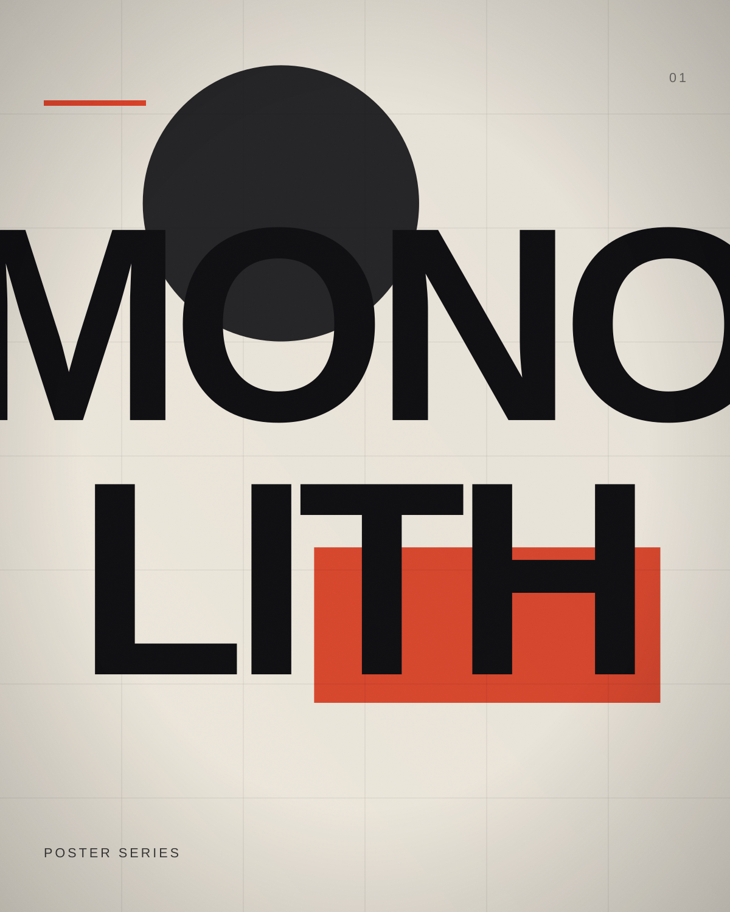
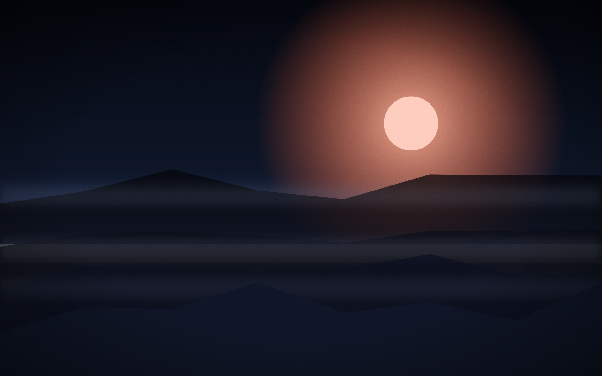
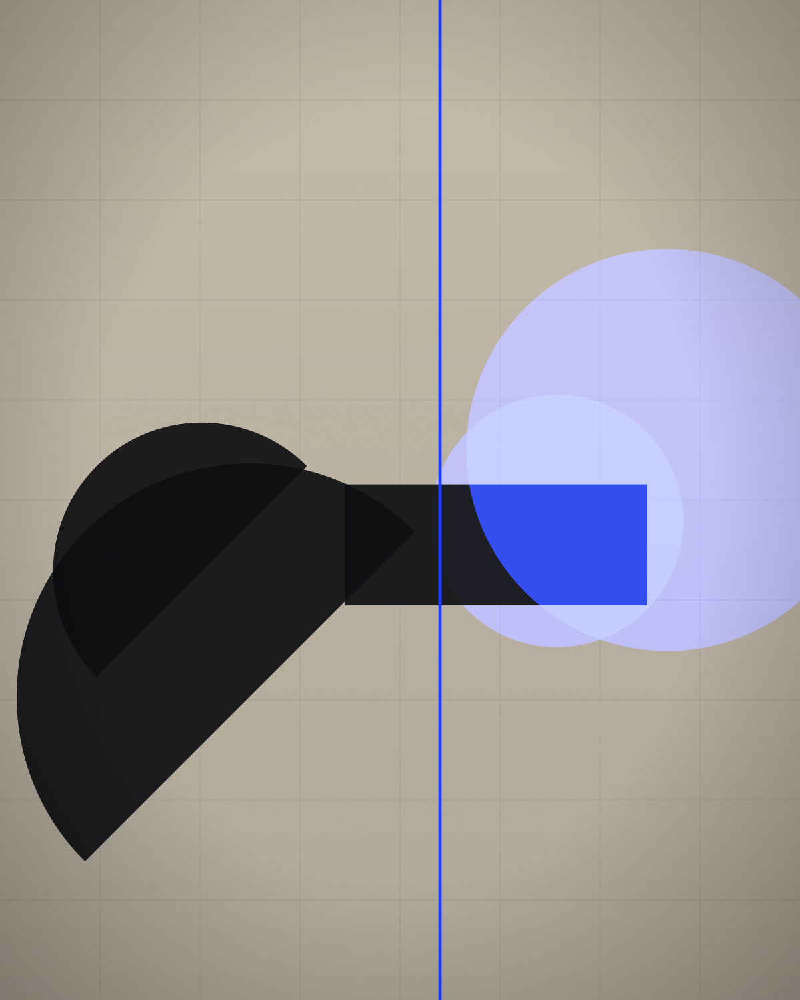
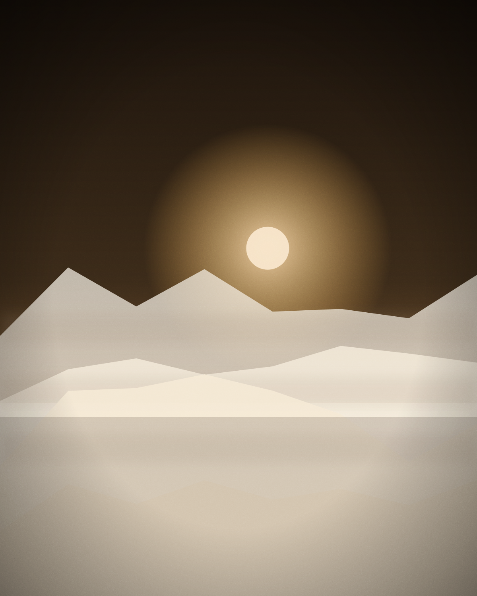
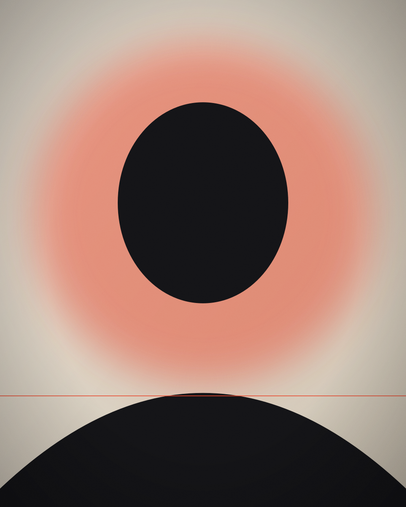

Monolith
A 12-poster series for an experimental music festival, built on one brutalist grid and oversized type.
Case study
Creating visual experiences through design, motion and artificial intelligence — for brands, films and cultural projects that deserve to be remembered.
 Obsidian SkyAI Films
Obsidian SkyAI Films
A tight edit of recent projects across design, motion, film and the AI visual lab.

A 12-poster series for an experimental music festival, built on one brutalist grid and oversized type.
Case study
A typographic identity for an architecture studio — custom wordmark, editorial grid, concrete restraint.
Case study
A title sequence and motion language that turns a design conference identity into movement.
Case study
A four-minute speculative AI film about memory, landscape and the images we lose.
Case study
An ongoing study of colour, material and light generated at the edge of legibility.
Case study
Every project below lives inside a category — open one to browse the full gallery.

Every frame should earn its place, or it is just decoration with a deadline.
I’m Nima — a visual designer and creative storyteller working across graphic design, motion, video and AI-assisted image making. I build systems first, then break them carefully.
Seven years in, my approach is unchanged: strong concept, restrained execution, obsessive craft in the details nobody is supposed to notice.
Replies within 24 hours — projects booked for Q4 2026
Mashhad, Iran — collaborating worldwide
Local time --:--